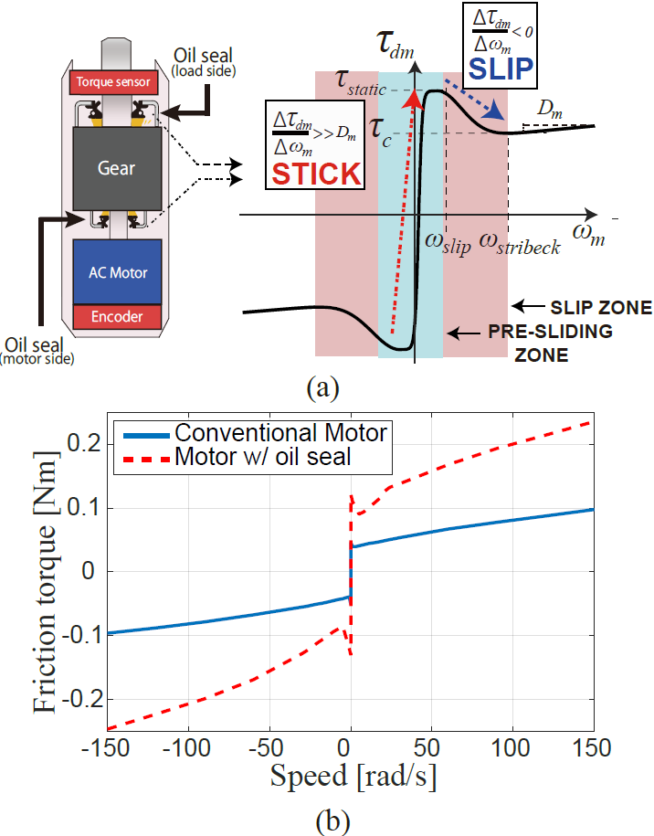

Geared Motor with Oil Seal
|  | |
オイルシール付きギアモータの非線形摩擦特性によるスティックスリップ現象の瞬時抑制制御法の開発
電気ギアーモータは制御のしやすさと高い出力トルクを持っているため様々なところで使われています。 しかし、ギアーの中に潤滑のためのオイル（潤滑剤）が入っているため、オイル漏れを起こす危険があります。 それを防ぐためにギアーの入力と出力にオイルシールを搭載する方法があります。しかし、オイルシールをつけることにより、 モータ全体の摩擦特性がオイルシール無しのギアーモータと比べて大きくなり、非線形摩擦の影響も強くなります。 そのため、ゼロ速度付近でスティックスリップ現象が発生して、モータの性能が大幅に悪化します。 同じオイルシール付きギアーモータを何台も使ったロボットではこのスティックスリップ現象の 影響が強まり、ロボットの動きが滑らかでなくなります。 これにより、従来の応用例である位置制御や速度制御、そして近年注目されている ヒューマンロボットインタラクションなどのバクドライバビリティー制御での精度が悪くなります。 本研究室ではモータのエンコーダとトルクセンサーを利用して、非線形摩擦にも対応できる摩擦推定・補償器の開発 に取り組んでいます。現在、摩擦の推定が出来る高次Motor-side Normalization Compensator(モータ側理想化補償器）を使い、 低速と高速領域によって摩擦除去性能を変えることにより非線形摩擦や線形摩擦の抑制を達成し、摩擦をモデル化することなく スティックスリップ現象の除去に成功し、オイルシール付きギアーモータを使って滑らかな動きを達成しています。 今後、この抑制アルゴリズムの更なる向上とロボットでの実用が期待されています。